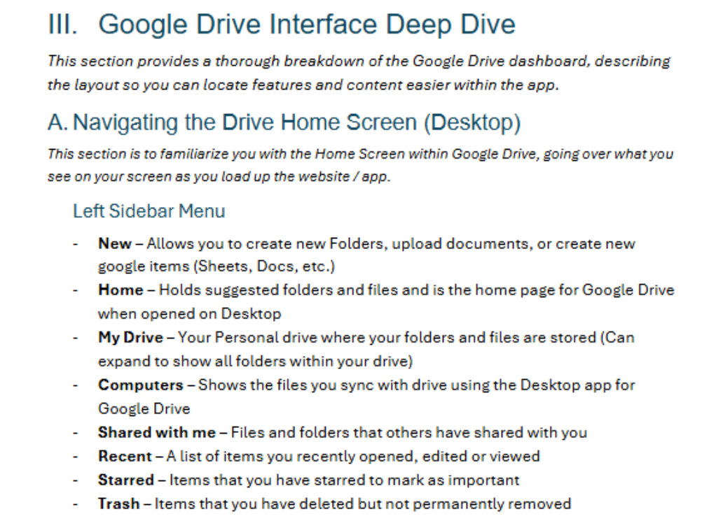

HTML Resume for CIS4004
Ben Hamilton
be733919@ucf.edu
https://www.linkedin.com/in/benjaminxhamilton/
I bring both technical experience and communication strength needed to succeed in most positions.
My internship at Kimley-Horn and previous role at Publix Supermarkets has prepared me to manage
hardware, software, and customer service challenges with profesionalism and efficiency.
Education
University of Central Florida - Orlando, FL - B.A., Science (Information Technology)
August 2022 - Present (Excpected Graduation: May 2027)
National Honor Society Member
First Generation College of Engineering and Computer Science Scholarship
Experience
Kimley-Horn and Associates, Orlando, FL - Information Technology Intern
June 2024 - Present
Provided Tier 1 and Tier 2 technical support to staff across multiple office locations, resolving hardward, software, and networking issues efficiently.
Assisted in the deployment and configuration of new workstations, ensuring seamless integration with existing systems and minimal downtime.
Supported Active Directory account management including password resets, user provisioning, and permission updates.
Publix Supermarkets, Vero Beach, FL - Grocery Clerk
September 2021 - May 2023
Delivered exceptional customer service, assisting customers with locating products and answering inquiries to enhance their shopping experience.
Maintained organized and well-stocked shelves, ensuring product availability and visual appeal.
Collaborated with team members to efficiently manage inventory and restock items during peak hours.
Skills
Programming Languages: Python, JavaScript, HTML/CSS, C, Java
Technical Tools & Systems: Windows OS, Microsoft 365, SCCM, VPN Support, Helpdesk Ticketing (ServiceNow), Windows Server
Soft Skills: Customer Service, Problem-Solving, Team Collaboration, Time Management
Project 1: Google Drive User Manual

A 40 page user manual on the ins and outs of Google Drive including how to create an account, how to collaborate using Google Drive, and more
Skills Learned: How to create actionable tasks, how to effectively create a manual, how to create proper instructions
Project 2: HTML Resume

A java program used to create a food ordering system, that takes in an order using a queue system and processes and prints correct order.
Skills Learned: How to use java to create a queue, using instance variables, methods, and other things to create a working program to create a food order.